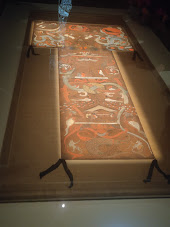

<div class="travel-content">
    <div class="travel-section">
        <div class="section-title">2024 Winter Vacation</div>
        <div class="section-date">January 2024</div>
        <div class="divider"></div>
        <p>Sichuan Jiuzhaigou, Museum, Beijing, and Hunan</p>
        <div class="slider">
            <div class="slides">
                <!-- Jiuzhaigou images -->
                <div class="slide"></div>
                <div class="slide"></div>
                <div class="slide"></div>
                <div class="slide"></div>

                <!-- Museum images -->
                <div class="slide"></div>
                <div class="slide"></div>

                <!-- Beijing images -->
                <div class="slide"></div>
                <div class="slide"></div>

                <!-- Hunan images -->
                <div class="slide"></div>
                <div class="slide"></div>
            </div>
        </div>
    </div>
</div>

<script>
	document.querySelectorAll('.slider').forEach(sliderContainer => {
		const slides = sliderContainer.querySelector('.slides');
		let index = 0;
		const totalSlides = slides.children.length;
	
		setInterval(() => {
			index = (index + 1) % totalSlides;
			slides.style.transform = `translateX(-${index * 100}%)`;
			console.log(`Current index: ${index}`); // 输出当前显示的图片索引，帮助调试
		}, 3000); // 每3秒切换
	});
	console.log(`Current index: ${index}`); // 输出当前显示的图片索引，帮助调试

	
</script>

<style>
    /* 为标题添加顶部填充，使其下移 */
    .page__title {
        padding-top: 50px; /* 确保标题向下移动，避免被遮挡 */
    }

    body {
        font-family: Arial, sans-serif;
        background-color: #f4f4f4;
        margin: 0;
        padding: 20px;
    }

    .travel-section {
        margin: 20px 0;
        max-width: 600px;
        margin-left: 0;
    }

    /* 调整 section-title 的字体大小 */
    .section-title {
        font-size: 1.2em; /* 将字体缩小为 1.2em */
        font-weight: bold;
        color: #555;
        margin-bottom: 5px;
    }

    .section-date {
        font-size: 1em;
        color: #777;
        margin-bottom: 10px;
    }

    .divider {
        height: 1px;
        background-color: #ddd;
        margin: 20px 0;
    }

	.slider {
		position: relative;
		width: 100%; /* 适应父容器宽度 */
		overflow: hidden; /* 隐藏超出部分 */
		border-radius: 10px;
		margin-left: 0;
	}
	
	.slides {
		display: flex; /* 水平排列子元素 */
		transition: transform 0.5s ease-in-out; /* 添加平滑过渡 */
	}
	
	.slide {
		min-width: 100%; /* 每张图片占据100%的宽度 */
		box-sizing: border-box;
	}
	
	img {
		width: 100%; /* 图片宽度填充整个容器 */
		border-radius: 10px;
	}
	
</style>
